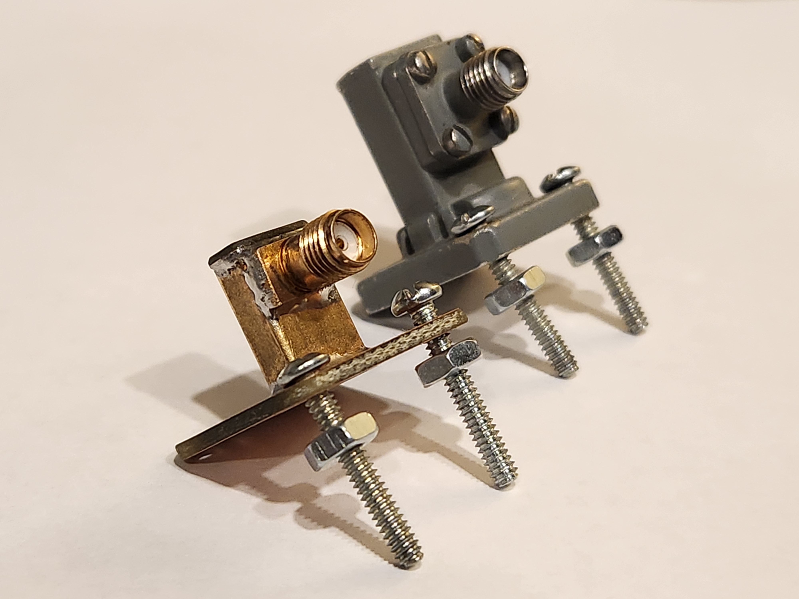

N6MX
 Contents
ContentsI read in one of W1GHZ's articles that inexpensive rectangular hobby brass can work as a waveguide and that there is some close in dimension to WR34 [1]. Another W1GHZ article gave me confidence that I didn't need to match WG sizes perfectly for it to work well [2]. I found some brass tubing on Amazon that I thought would work and tried it as an experiment to homebrew a WR42 to coax adapter for 24GHz.
Using another W1GHZ article on Waveguide to Coax design [3] as a guideline, I did the following:
First, I cut about 5/8" length of tubing for the waveguide section and drilled a 5/32" hole about 3mm from one end. To make a backshort I soldered a little piece of copper clad to the tubing end with the hole. For a flange, I traced the outline of a WR42 flange and mounting holes on copper clad, cut it out with aviation snips, and then drilled the mounting holes. To make the hole for the tube, I drilled two holes in the center that were a bit smaller in diameter than the width of the tubing. I squared out the hole with a metal file, friction fit the tube into it, and soldered it together.
For the SMA connector I made an initial cut so it would fit in the tubing. The Teflon insulator friction fits into the 5/32" hole and stays put as I test it. To test and tune it, I first set up a MA/COM gunnplexer operating at 24.155GHz as my source, connected it to a commercial OmniSpectra WG/coax adapter, and measured the power on my Anritsu power meter. I used this as my reference power by hitting the dB(REL) button so that subsequent measurements will show power relative to the commercial adapter. I swapped the commercial adapter out for my homebrew adapter and read an initial measurement around -6.5dBR. With a Dremel tool and sanding drum, I incrementally shaved down the center conductor and Teflon a tenth to a fifth of a millimeter at a time and the relative power got better and better every time. At some point I shaved the conductor down twice and it didn't get any better so I assumed it peaked at +1.78dBR. I stopped at this point since it would likely only get worse if I continued. The conductor and Teflon ended up being 1.7mm long when I was done. I soldered the connector on, remeasured and still got 1.78dBR so I called it good.
Homebrew adapter next to commerical part
I like to thank Doug Millar K6JEY, Kent Britian WA5VJB, and Kaha Sariashvili KM6MAP for their feedback on this write-up. Some of their feedback and comments are:
With inexpensive brass tubing and SMA connectors, one can make a waveguide to coax adapter for 24GHz with performance comparable to commercial counterparts. At the time of writing, one commercial part on eBay goes for about $120; parts for the homebrew adapter cost about $20 and can probably make 6 adapters. Another observation about the brass tubing is its lighter weight would be great for lightweight portable operations.
[1] https://www.w1ghz.org/waveguide/Waveguide_is_just_Metal.pdf
[2] https://www.w1ghz.org/waveguide/Waveguide_Matching_Plates.pdf
[3] https://www.w1ghz.org/QEX/Rectangular_Waveguide_to_Coax_Transition_Design.pdf
Thanks for reading!
73,
Dylon N6MX